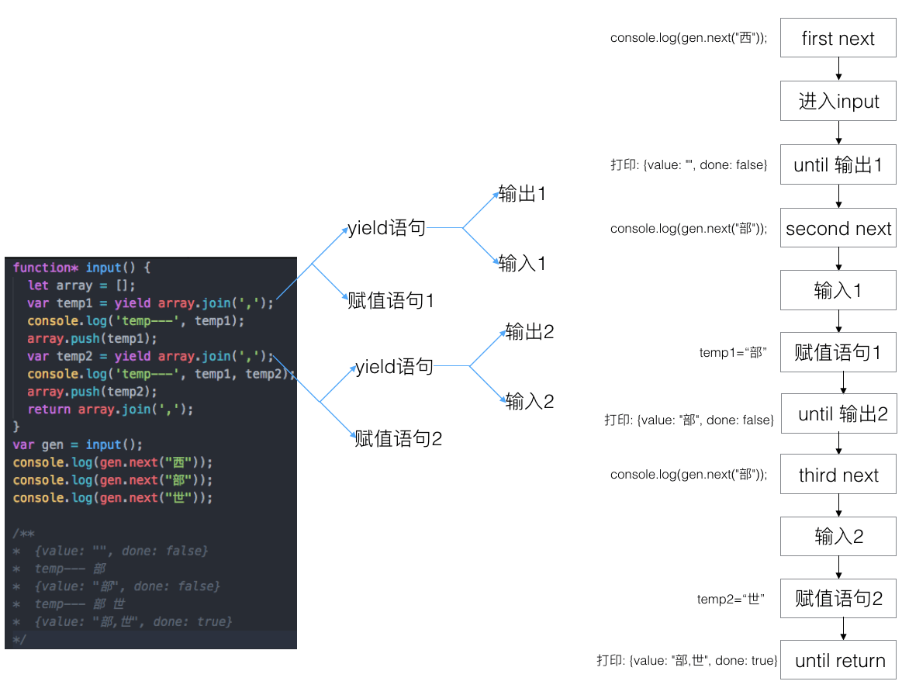

异步演进
promise
略
iterable
iterable objects (including the built-in String, Array, e.g. the Array-like arguments or NodeList objects, TypedArray, Map and Set, and user-defined iterables)
以上是天生具备可迭代能力的对象，下面讲讲后天的。
// 添加迭代器后，其便具备了迭代能力
Object.prototype[Symbol.iterator] = function() {
let index = 0;
let propKeys = Reflect.ownKeys(obj);
// let propKeys = Object.keys(obj); //忽略Symbol类型键值
return {
next() {
if (index < propKeys.length) {
let key = propKeys[index++];
return {
value: {[key]: obj[key]},
done: false
};
} else {
return {
done: true
};
}
}
}
}
var obj = {
key1: 1,
key2: 2,
[Symbol('key3')]: 3
};
console.log([...obj]); //用Spread操作符展开iterable对象
for(var v of obj){ //用for...of遍历iterable对象
console.log(v);
}
/**
* [{key1: 1},{key2: 2},{Symbol(key3): 3}]
* {key1: 1}
* {key2: 2}
* {Symbol(key3): 3}
*/
Symbol
Every symbol value returned from Symbol() is unique. A symbol value may be used as an identifier for object properties;
Symbol类型的键值具备唯一性，可防止被覆盖，会被Object.keys和for...in忽略。
var obj = {
a: 1,
b: 2,
[Symbol('c')]: 3, //唯一Symbol，用于局部
[Symbol.for('d')]: 4 //共享Symbol，用于全局作用
}
for(var p in obj){
console.log('p--', p);
}
console.log(Object.keys(obj));
console.log(obj[Symbol.for('d')]);
console.log(obj.hasOwnProperty(Symbol.for('d')));
/**
* p-- a
* p-- b
* ["a", "b"]
* 4
* true
*/
Generator
The Generator object is returned by a generator function and it conforms to both the iterable protocol and the iterator protocol.
so，Generator对象也可被for...of遍历和...展开。
function* input() {
let array = [];
var temp1 = yield array.join(',');
console.log('temp---', temp1);
array.push(temp1);
var temp2 = yield array.join(',');
console.log('temp---', temp1, temp2);
array.push(temp2);
return array.join(',');
}
var gen = input();
console.log(gen.next("西"));
console.log(gen.next("部"));
console.log(gen.next("世"));
/**
* {value: "", done: false}
* temp--- 部
* {value: "部", done: false}
* temp--- 部 世
* {value: "部,世", done: true}
*/
Generator的流程略显复制，上面的代码可以参考下图进行阅读。

Generator与异步回调的关系
Thunk 函数现在可以用于 Generator 函数的自动流程管理(了解更多)
js中的闭包，可为执行的函数，形成闭合的环境（or 空间），用于存储局部变量。Thunk 函数其实就是利用闭包，实现了多个参数的存储或者延迟执行。而其真正的作用，是配合Generator实现的自动流程管理(了解更多)，可以较好解决异步回调嵌套的问题。
但是，从"了解更多"博客中的实例来看，其实还不够优秀，因为其是通过回调函数递归的方式来实现的，这对回调有较大的限制（没办法定制化回调函数的逻辑，流程管理中涉及回调函数无法解耦）。
借助promise，我们可以有更棒的实现。
function* gen() {
var r1 = yield new Promise(function(resolve){
setTimeout(function(){
resolve(1);
}, 1000);
});
console.log('r1--', r1);
var r2 = yield new Promise(function(resolve){
setTimeout(function(){
resolve(2);
}, 1000);
});
console.log('r2--', r2);
var r3 = yield new Promise(function(resolve){
setTimeout(function(){
resolve(3);
}, 1000);
});
console.log('r3--', r3);
}
function autoGen(fn) {
var genor = fn();
function run(data) {
var result = genor.next(data);
if(!result.done){
result.value.then(function(r){
run(r);
});
}
}
run();
}
autoGen(gen);
/**
* r1-- 1
* r2-- 2
* r3-- 3
*/
async await
略
总结
iterable -> Generator -> async await
async await的流程很接近（yield接收promise对象，自执行流程、以同步写法实现了异步嵌套的流程）。